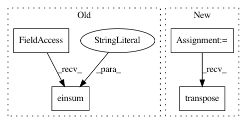

315990901cdcdca241013ee5e6c581391bae2523,geomstats/geometry/spd_matrices.py,SPDMetricBuresWasserstein,exp,#SPDMetricBuresWasserstein#,734
Before Change
Riemannian exponential.
eigvals, eigvecs = gs.linalg.eigh(base_point)
transp_eigvecs = gs.einsum("...ij->...ji", eigvecs)
rotated_tangent_vec = gs.matmul(transp_eigvecs, tangent_vec)
rotated_tangent_vec = gs.matmul(rotated_tangent_vec, eigvecs)
ones = gs.ones(eigvals.shape)
After Change
Riemannian exponential.
eigvals, eigvecs = gs.linalg.eigh(base_point)
transp_eigvecs = Matrices.transpose(eigvecs)
rotated_tangent_vec = Matrices.mul(transp_eigvecs, tangent_vec,
eigvecs)
coefficients = 1 / (eigvals[..., :, None] + eigvals[..., None, :])
rotated_sylvester = rotated_tangent_vec * coefficients
In pattern: SUPERPATTERN
Frequency: 3
Non-data size: 4
Instances
Project Name: geomstats/geomstats
Commit Name: 315990901cdcdca241013ee5e6c581391bae2523
Time: 2020-12-15
Author: yann.thanwerdas@gmail.com
File Name: geomstats/geometry/spd_matrices.py
Class Name: SPDMetricBuresWasserstein
Method Name: exp
Project Name: geomstats/geomstats
Commit Name: 315990901cdcdca241013ee5e6c581391bae2523
Time: 2020-12-15
Author: yann.thanwerdas@gmail.com
File Name: geomstats/geometry/spd_matrices.py
Class Name: SPDMetricBuresWasserstein
Method Name: log
Project Name: geomstats/geomstats
Commit Name: 315990901cdcdca241013ee5e6c581391bae2523
Time: 2020-12-15
Author: yann.thanwerdas@gmail.com
File Name: geomstats/geometry/spd_matrices.py
Class Name: SPDMetricBuresWasserstein
Method Name: inner_product